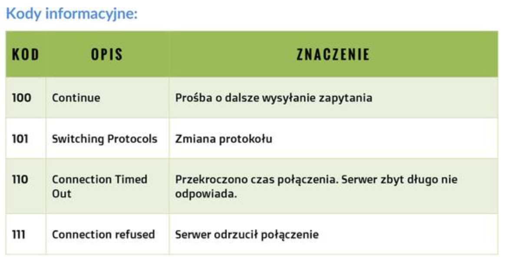
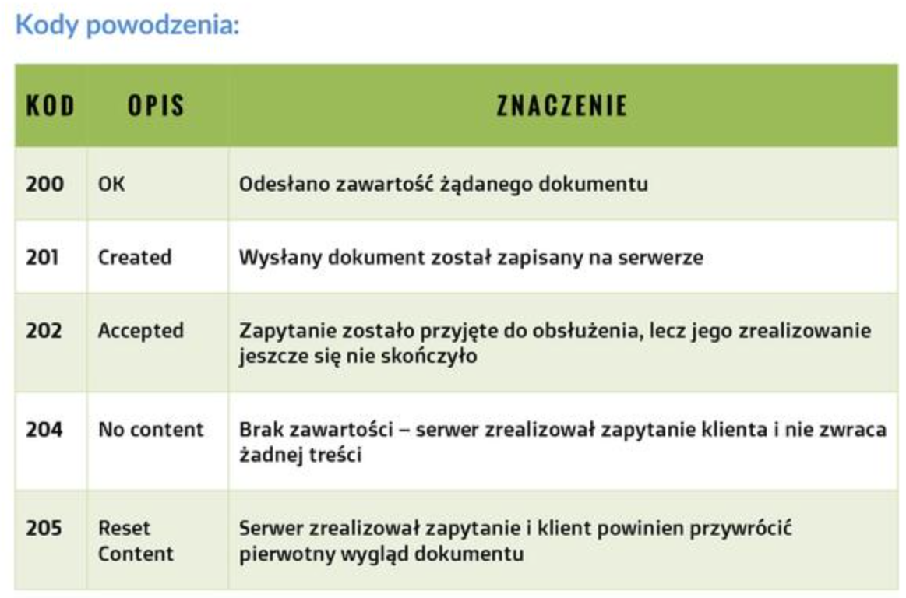
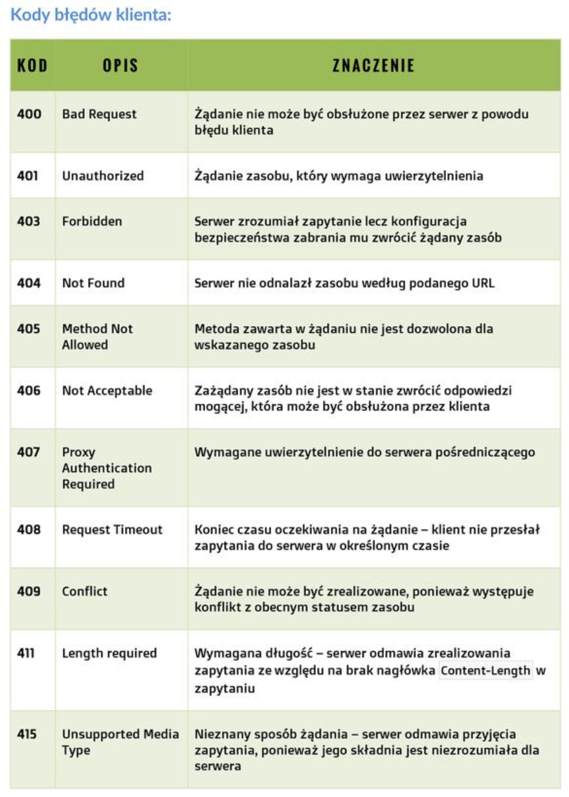
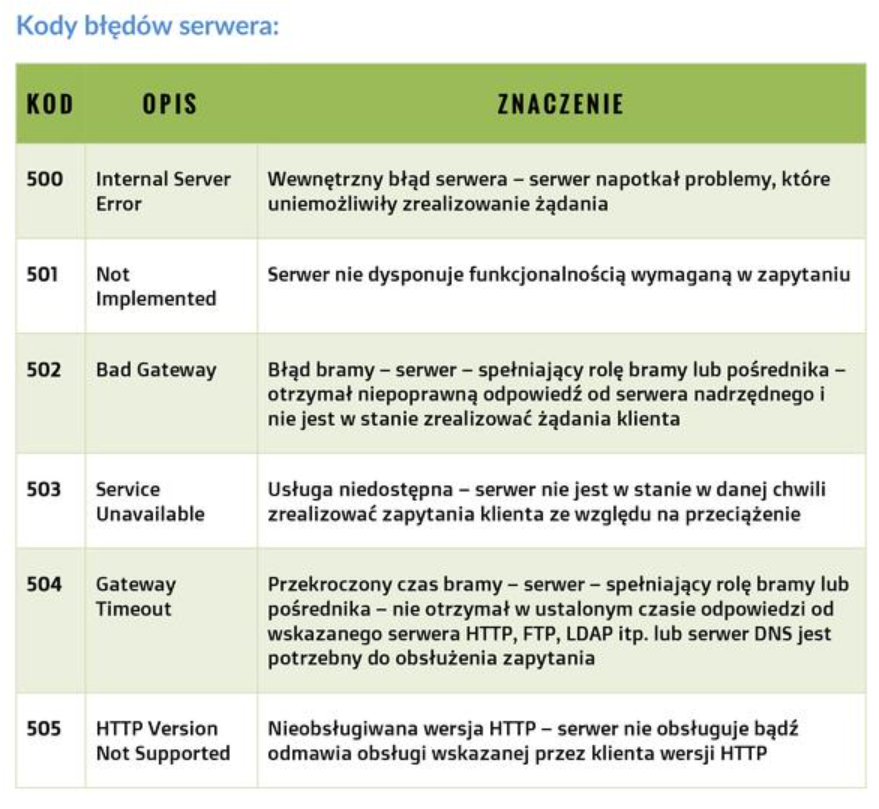
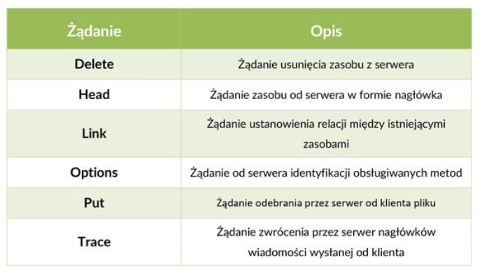
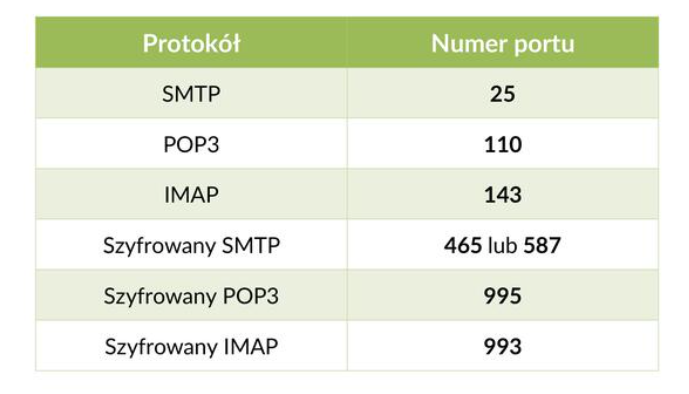
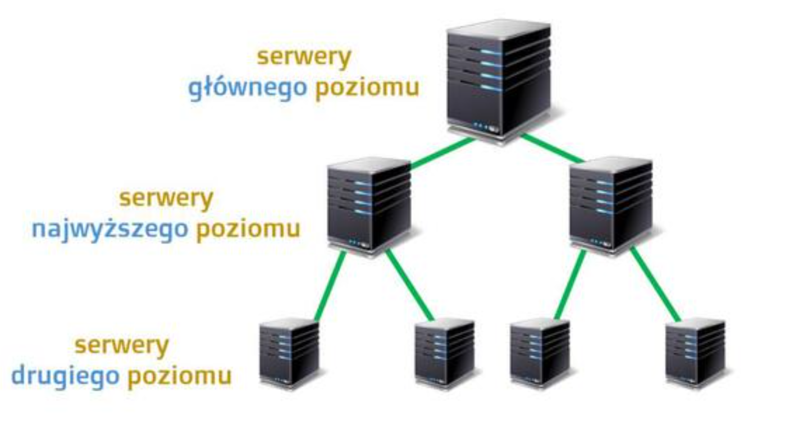
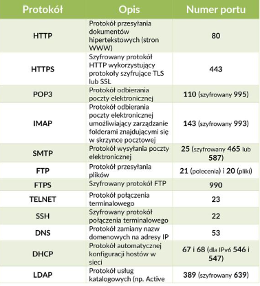
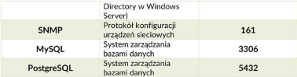

Protokoły warstwy aplikacji:
- HTTP
- HTTPS
- SMTP
- POP3
- IMAP
- FTP
- SSH
- DNS
- DHCP
Protokół HTTP - Standardowo działa na 80 porcie, definiuje
podstawowe rodzaje żądań, za których pomocą klient komunikuje się
z serwerem WWW. Do najważniejszych żądań nalężą: GET oraz POST.
Metoda GET:
GET służy do żądania od serwera danej strony internetowej.
GET /index.html HTTP/1.1
Oprócz nazwy porządanego zasobu posiada też stosowaną wersję protokołu.
HTTP/1.1 200 OK /index.html
W żądaniu GET znajdują się takie informacje jak: nazwa hosta, nazwa
przeglądarki, typu plików, język strony, kodowanie znaków. Natomiast
w odpowiedzi serwera znajdują się takie informacje, jak: czas serwera,
nazwa aplikacji serwera, czy czas wygaśnięcia dokumentu.
Kody informacyjne (w skrócie):
- Kody serii 100 oznaczają, że coś nie poszło (informacyjne)
- Kody serii 200 oznaczają, że dana operacja się udała (powodzenia)
- Kody serii 400 oznaczają, że coś jebło z twojej strony(błędy klienta)
- Kody serii 500 oznaczają, że coś jebło, ale tym razem ze strony serwera(błędy serwera)
I tak każdy wie, że najlepszy kod, jaki może się pojawić to kod 418 ;)




Metoda POST
Służy do przesyłania danych na serwer.
login: {login} hasło: {password}
!UWAGA, trzeba pamiętać, że http to protokół niezabezpieczony
,dlatego jego stosowanie w metodach POST to debilstwo totalne.
Bezpieczny odpowiednik protokołu HTTP to HTTPS, który szyfruje
dane.
Pozostałe typy wiadomości, które mogą być wysłane przez klienta do
serwera to:

Protokół warstwy aplikacji SMTP służący do wysyłania poczty.
Protokół warstwy aplikacji POP3 służący do odbierania poczty.
Obecnie może być również stosowany protokół IMAP.
Protokoły SMTP, POP3 oraz IMAP zawierają tzw. Procesy.
Proces MUA dostępny jest w tych trzech protokołach i działa on
na urządzeniu klienckim. Pozostałe dwa procesy, MTA (Mail transfer Agent)
oraz MDA (Mail delivery agent) działają na serwerze. Proces MTA dostępny
jest w protokole POP3, natomiast proces MDA dostępny jest w protokole SMTP.
Uproszczony proces przesytania wiadomości pocztowych z
wykorzystaniem procesów wyglada następująco:
-
Użytkownik tworzy wiadomość e-mail i za pomocą procesu MUA
przekazuje ją do serwera poczty i procesu MTA działającego
na tym serwerze.
-
Proces ten analizuje nagtówek wiadomości, m.in. po to aby określić
adresata wiadomości i sprawdza czy użytkownik do którego wiadomość
jest kierowana znajduje się na jego lišcie użytkowników.
-
Jeśli tak jest, to przekazuje wiadomość do procesu MDA, który
odpowiedzialny jest za dostarczenie jej do odpowiedniego adresata.
-
Jeśli adresat wiadomości nie posiada konta na tym serwerze to proces
MTA dostarcza wiadomość do procesu MTA innego serwera, na którym konto
tego użytkownika istnieje.
-
Serwer ten przekazuje wiadomość do preocesu MDA, a ten dostarcza wiadomość do właściwego adresata.
Porty, na których działają protokoły poczty elektronicznej:

Protokół FTP (File transfer protocol)
Służy do przesyłania plików na serwer lub odbierania plików z serwera. Dedykowane aplikacje takiej, jak
FileZilla czy WinSCP ułatawiają korzystanie z protokołu FTP. Aby połącznie FTP było możliwe, klient musi
nawiązać połączenie z serwerem.
Protokół SSH (Secure Shell)
Służy do zarządzania serwerami. Protokół SSH wynosi się z protokołu TELNET. Protokół SSH zawiera algorytmy
szyfrowanie, takie jak: algorytm RSA, czy algorytm DSA. Podczas instalacji SSH tworzona jest para kluczy (publiczna
oraz prywatna), służy ona do szyfrowania i deszyfrowania aplikacji. Standardowo owy protokół działa na porcie 22.
Jeden z programów SSH to PUTTY. Aby go uruchomić trzeba podać nazwę hosta lub jego adresu IP.
Protokół DNS (Domain Name System)
Protokół DNS zamienia nazwę zrozumiałą dla człowieka na adres IP. DNS działa w architekturze
klient - serwer. Sprawia, iż na komputerze jest uruchamiana usługa "DNS resolver", która
obsługuje aplikacje na komputerze klienta. Kiedy konfigurujemy komputer musimy podać dwa adresy
serwerów DNS. Może być też jeden, ale drugi jest zabezpieczeniem, żeby dana usługa napewno mogła
działać.

Protokół DHCP (Dynamic Host Control Protocol)
Protokół DHCP pozwala podłączonym do sieci komputerą pobierać adres IP, maskę podsieci, adres bramy
oraz serwer DNS. Dynamicznie przydziela adresy komputerą.

